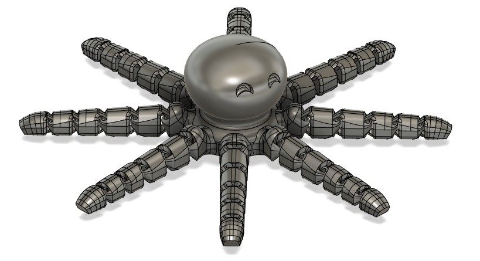
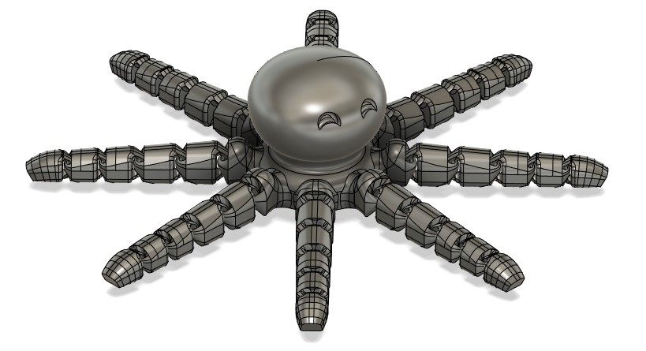

Octopus
 
The octopus is a very popular 3D print. I loved the design, and while not being very artistic I decided to make my own. I aimed to make a joint that was visually appealing, but also strong enough at a scaled down size. In addition, I wanted the 3D print to use standard settings over detailed, slower settings. This posed a challenge with the overhangs and small tolerances in the joints of the tentacles. In the end, my design was able to meet all the objectives.